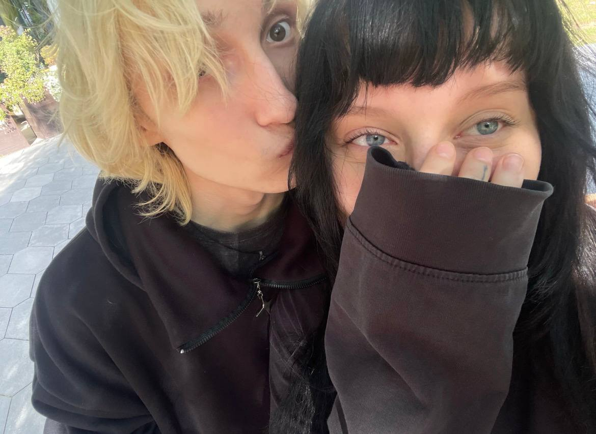

Привет, Катя! 🌸
Для тебя приготовлен маленький сюрприз.
Введи дату, когда всё началось 💗
Катя, нам 3 месяца! 🎀

привет катюшш, пишу это в нули, отправлю ближе к вечеру (все таки тогда предложил встречаться хаывх) да и ты спишь уже сейчас солнышко). темы немного могут скакать, но я постараюсь написать не подбирая слов, а буквально, так как хочу
во первых я безумно рад, я рад каждый день был, и являюсь тому что ты моя девушка.
для когота, это могут быть просто цифры, просто дни. но для меня сегодня 3 месяца как мы это "мы" котенок<333
я очень сильно тебя люблю, и каждый раз когда так пишу, я просто пытаюсь уместить в эти 5 слов, все то, что в жизни то блять передать не могу
ты настолько яркая, настолько добрая и заботливая, что я не верил что ты есть, а сейчас ты моя девушка, а я твой парень. я себе завидую простопиздец ежедневно. твои самые красивые в мире глазки, самые мягкие и приятные губки, самые нежные ручки, и самыелучшиеножки. все в тебе люблю солнышко
на протяжении этих трех месяцев, вижу как ты стараешься, и делаешь каждый мой новый день лучше, жизнь насыщеннее, и эмоции настоящими
благодаря тебе я начал понимать себя, не боятся своих эмоций, и не думать что все что чувствую это неправильно.
вчера не очень много поговорили, да и последнее время мало времени на нас получается, тяжеловато сейчас нам обоим, но в голове так и лежат твои слова, о том что ты будешь рядом.
недопонимания какиета, честно, прости меня что поднимаю какието темы по-несколько раз, порой говорю не то, что нужно в тот или иной момент, что тему перевожу на себя. я не хочу специально выводить тебя на эмоции этим, и портить порой тебе настроение. мне важно чтобы мы слышали друг друга, потому что мне важны твои чувства, твои мысли, да блять ну просто твое состояние, что ты сегодня кушала, как проснулась, и какую музыку ты будешь слушать пока идешь на работу. пусть кто угодно ненавидит меня, но мне важна моя девушка, и во всех ситуациях твое мнение будет иметь приоритет несравнимый не с чьим. думаю о тебе все также, все также спешу домой, или просто выйти покурить чтобы написать тебе даже самую банальную хуйню какуют хавыхах. мне безумно нравится тебя смешить, поддерживать когда тебе грустно, тяжело, или просто плохо. я не могу описать насколько сильно приятно осознавать, что в самые счастливые, и плохие периоды мы есть у друг друга. всегда хотелось быть чьим то домом, который и от дождя спасет, и от ебаного осуждения со стороны других людей, где никогда не будет холодно, и куда будет желание возвращаться как можно скорее.
катюш, когда писал тебе о том что мне тебя не хватает, когда спрашивал почему ты пишешь люблю без ОЧЕНЬ СИЛЬНО хавыххв, почему перестала лайкать стикеры.
просто не мог объяснить словами насколько важно твое внимание для меня, насколько сильно мне бы сейчас, в момент когда ты читаешь это сообщение, не хотелось приехать к тебе, просто побыть рядом, выслушать тебя, поддержать и сказать глядя тебе в глаза что я верю в тебя, и не меньше доверяю. я не могу этого сделать, созваниваться у нас получается тоже редко, и единственное место где мы можем побыть друг с другом в этот период это тут, в тиктоке или тугезерлиххвыа, поэтому я и накидываю тебе тиктоки, пишу и стараюсь быть рядом когда тебе это нужно, осознал что тебе порой просто хочется подрамматизировать и услышать поддержку в свою сторону а не слушать как решить проблему или примеры какието, знаю что тебе тоже хочется, взять меня за ручку, поцеловать, просто ощутить мое присутствие рядом, и я надеюсь что этим сообщением я смогу вызвать у тебя тепло, и если вдруг слезки, то только счастья любимая🖤
котенок уважаю твое лично пространство, и стараюсь не задерживать, и не тревожить тебя перед сном так как понимаю что плохой сон скажется на тебе очень сильно, и запомнил я это просто потому что тебе это важно, просто потому что так моя любимость чувствует себя лучшее и счастливее.
когда ты об этом так прямо сказала после психолога, это звучало как "ты не должен мне писать пока я занимаюсь своими делами" в моих глазах, сейчас я это понимаю, а тогда не понимал из-за чего мне тревожно на счет этого
а просто потому что нам еще когда я был в москве, из-за вечного пиздеца у тебя на работе, и моей работы в твои смены, пиздец с яном, пиздеца с внезапной повесткой, и самое главное что тебе даже дома порой бывает тяжело отдохнуть. было очень тяжело, тебе я не представляю насколько, если у тебя был такой ужасный период зайка на тот момент, прости что тогда думал только о себе, и сейчас понимаю насколько делал тебе этим больно. потом я уехал, и боялся того что нашего общения станет еще меньше из-за того что ситуация у тебя на работе не успокаивалась, ты не высыпалась, и мои постоянные разъезды по врачам, от ощущения что я уже не смогу просто приехать встретить после работы становилось еще хуже, что мы буквально только в переписке можем быть рядом, где у нас не получается этого делать.
мне и было страшно тогда, что я буквально ничего не могу сделать, потому что чувствовал что в эти моменты было ощущение что тебе и так не сладко, а я этими разговорами делаю еще хуже(, а после того как ты мне сказала про личное пространство, это в совокупности всего звучало именно так как я написал тебе выше. и от ощущения что не могу ничего сделать, я и поговорил тогда с тобой второй раз на счет этого. сейчас я это в самом практически канце пишу, потому что тогда я ну, ну просто не смог объяснить почему для меня это так звучало, и почему настолько было важно. а сейчас могу сказать что именно я тогда испытывал.
честно, с момента когда я предложил тебе быть моей девушкой, я ни разу об этом не жалел, появление тебя в моей жизни это самое прекрасное и лучшее событие в моей жизни. после того как ты сказала что просто не умеешь скучать, я не знаю как объяснить, это не такая простая вещь как например выгорание, а ты еще и объяснила мне что именно имеешь ввиду под этим. и мне блять безумно было интересно это слушать, ты в моих глазах всегда будешь маленьким котенком, которого так и хочется погладить, обнять, и быть рядом слушая и принимая тебя. ведь я люблю именно тебя катюш, даже когда не понимаем друг друга, даже когда тебе грустно или у тебя нет настроения, когда смеешься громче всех и сильно улыбаешься. я и влюбился в тебя потому что в моих глазах ты всегда была и будешь лучше остальных, люблю любую теббя котен, а не образы.
так давай продолжим делать жизнь друг друга еще счастливее, влюбляться в друг друга еще сильнее чем раньше, и продолжать выбирать каждый день.<3
катюш, я никого и никогда так не любил, и никто не делал меня таким счастливым, это получается только у тебя зайка
и хочу просто сказать спасибо за то, что ты есть, что ты столько для меня делаешь.
3 месяца как появились "мы", и надеюсь что своими усилиями я тоже делаю твою жизнь хоть чуточку лучше хиххи.
ты самая лучшая девушка катюш, я бесконечно рад тому, что ты выбираешь меня🖤🖤
текст листается сам · можно листать пальцем 🌷